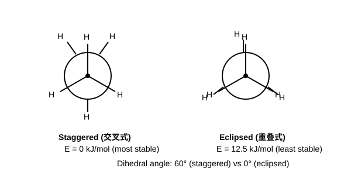
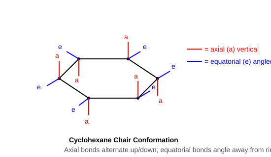

沿C−C键轴方向观察：前碳=圆心+三条线；后碳=圆+三条线
交叉式(staggered)比重叠式(eclipsed)稳定（扭转应变小）

乙烷旋转能垒 = 12.5 kJ/mol（全重叠→全交叉的能量差）
| 构象 | H−H关系 | 相对能量 | 稳定性 |
|---|---|---|---|
| 对位交叉(anti) | CH3对位180° | 0 (最低) | 最稳定 |
| 邻位交叉(gauche) | CH3邻位60° | +3.8 kJ/mol | 次稳定 |
| 部分重叠 | CH3与H重叠 | +16 kJ/mol | 不稳定 |
| 全重叠 | 两CH3重叠0° | +19 kJ/mol | 最不稳定 |

| 基团 | A值/(kJ/mol) | 基团 | A值/(kJ/mol) |
|---|---|---|---|
| F | 0.15 | CH3 | 7.1 |
| Cl | 0.53 | CH2CH3 | 7.3 |
| Br | 0.48 | CH(CH3)2 | 9.2 |
| OH | 0.87 | C(CH3)3 | 22.8 |
| COOH | 1.35 | Ph(C6H5) | 3.0 |
A值越大 → 越强烈要求占e键。叔丁基的A值极大，几乎100%占e键（"构象锁"）。
能量顺序（稳定性）：椅式(最稳定) < 扭船式 < 船式 < 半椅式(最不稳定)
旗杆氢排斥：船式构象中C1和C4上的两个axial氢（旗杆氢）指向环内同侧，距离仅约1.83Å，产生强烈的van der Waals排斥，是船式不稳定的主要原因之一。
引发(Initiation)：X2 →(hv/Δ)→ 2X·（均裂）
传递(Propagation)：
① R−H + X· → R· + HX（夺氢）
② R· + X2 → R−X + X·（夺卤素）
终止(Termination)：任意两自由基偶联 → 终止链反应
| 1° H | 2° H | 3° H | 选择性 | |
|---|---|---|---|---|
| Cl2 | 1 | 3.8 | 5.0 | 低（几乎无选择性） |
| Br2 | 1 | 82 | 1600 | 极高（几乎只在3°上） |
某位置产物% = (该位置H的个数 × 相对活性) / Σ(各位置H数 × 相对活性)
碳自由基为sp²杂化，平面三角形结构。孤电子占据在垂直于平面的p轨道中。
这种平面结构使得相邻C−H键可以与含孤电子的p轨道发生超共轭作用，从而稳定自由基。
ΔH = Σ(断键键能) − Σ(成键键能)
ΔH < 0 → 放热反应；ΔH > 0 → 吸热反应
例：CH4 + Cl· → CH3· + HCl
ΔH = D(C−H) − D(H−Cl) = 435 − 431 = +4 kJ/mol（微弱吸热）
例：CH4 + Br· → CH3· + HBr
ΔH = D(C−H) − D(H−Br) = 435 − 366 = +69 kJ/mol（明显吸热 → 高选择性）
引发(Initiation)：
Cl−Cl →(hv)→ 2Cl· ΔH = +D(Cl−Cl) = +242 kJ/mol
传递(Propagation)：
步骤①：CH4 + Cl· → CH3· + HCl
断键：D(CH3−H) = 435 kJ/mol
成键：D(H−Cl) = 431 kJ/mol
ΔH1 = 435 − 431 = +4 kJ/mol（微弱吸热）
步骤②：CH3· + Cl2 → CH3Cl + Cl·
断键：D(Cl−Cl) = 242 kJ/mol
成键：D(CH3−Cl) = 351 kJ/mol
ΔH2 = 242 − 351 = −109 kJ/mol（强放热）
总反应热：ΔH = ΔH1 + ΔH2 = 4 + (−109) = −105 kJ/mol（放热反应，热力学有利）
终止(Termination)：
Cl· + Cl· → Cl2
CH3· + Cl· → CH3Cl
CH3· + CH3· → CH3CH3
结论：传递步骤①微弱吸热 → 过渡态类似反应物(早期TS) → 对自由基稳定性不敏感 → Cl2选择性低。
| 环大小 | 环张力 | 化学性质 |
|---|---|---|
| 环丙烷 | 很大(115kJ/mol) | 可开环加成：+ HBr → BrCH2CH2CH3；+ Br2 → BrCH2CH2CH2Br |
| 环丁烷 | 较大(110kJ/mol) | 催化加氢可开环，但不如环丙烷活泼 |
| 环戊烷 | 很小(26kJ/mol) | 稳定，类似烷烃 |
| 环己烷 | 无(0) | 最稳定，完全无张力 |
取代环丙烷与HBr加成开环时，遵循类似Markovnikov规则：Br加到含氢较少的碳上（即取代基较多的碳），H加到含氢较多的碳上。
例如：1-甲基环丙烷 + HBr → CH3CBr(CH2CH3)... Br加在甲基所在碳上
C=C + H2 →(Ni/Pd/Pt催化)→ 烷烃
特点：双键完全加氢，产物为对应烷烃。
2RBr + 2Na → R−R + 2NaBr
局限性：仅适用于合成对称烷烃（R−R）。若用两种不同RX，会得到三种产物（R-R、R'-R'、R-R'混合物）。
RX + Zn + H+ → RH + ZnX2
将卤代烃还原为烷烃，常用Zn/HCl或Zn/AcOH体系。
R2CuLi + R'X → R−R' + RCu + LiX
优势：可制备不对称烷烃（R≠R'），是Wurtz反应的重要改进。
制备步骤：2RLi + CuI → R2CuLi + LiI（先制备二烷基铜锂）
完全氧化（燃烧）：CnH2n+2 + (3n+1)/2 O2 → nCO2 + (n+1)H2O
工业可控氧化：RCH2CH2R' + O2 →(MnO2催化, 110°C)→ RCOOH + R'COOH
工业上利用此法从烷烃生产低级脂肪酸。
在无氧高温(约800°C)条件下，C−C键断裂，大分子烷烃裂解为小分子烷烃 + 烯烃。
例：CH3CH2CH2CH3 →(800°C)→ CH2=CH2 + CH3CH3 等
工业意义：石油裂解制乙烯、丙烯等重要化工原料。
CH4 →(Cl2/hv)→ CH3Cl →(Cl2/hv)→ CH2Cl2 →(Cl2/hv)→ CHCl3 →(Cl2/hv)→ CCl4
实际反应中四种产物同时生成；通过控制Cl2与CH4的比例来调节主产物：
正庚烷 > 正己烷 > 正戊烷 > 2-甲基戊烷 > 2,2-二甲基丁烷
规律：碳链越长沸点越高；同碳数下支链越多沸点越低。
(1) 1,2-二溴乙烷：anti构象（两Br对位180°，距离最远）
(2) 乙二醇：gauche构象（OH...OH分子内氢键！）
(3) 2-氯乙醇：gauche构象（Cl和OH间氢键）
(4) 反-1-叔丁基-4-甲基环己烷：叔丁基和甲基都占e键
(5) 顺-1-异丙基-3-甲基环己烷：两个基团都可占e键
(1)反式 (2)反式 (3)反式 (4)顺式 (5)顺式 (6)顺式
判断方法：同侧=顺，异侧=反。椅式中1,2-双e或双a=反式；一e一a=顺式。
• 1,2-二甲基环己烷：反式 > 顺式（反式双e）
• 1,3-二甲基环己烷：顺式 > 反式（顺式双e）
• 1,4-二甲基环己烷：反式 > 顺式（反式双e）
• 小环稳定性：环戊烷 > 环丁烷 > 环丙烷（环张力递增）
• CH3CH2CH3 + Cl2/hv → 1-氯丙烷(6H×1=6) + 2-氯丙烷(2H×3.8=7.6) → 主要2-氯丙烷(56%)
• 溴代选择性极高 → 若有叔碳，几乎只在叔碳位取代
引发：Br2 →(hv)→ 2Br·
传递：
(CH3)3CH + Br· → (CH3)3C· + HBr（叔碳自由基，稳定）
(CH3)3C· + Br2 → (CH3)3CBr + Br·
终止：Br·+Br·→Br2；R·+Br·→RBr等
由于Br2选择性极高(3°H活性=1600)，几乎只得到叔丁基溴。